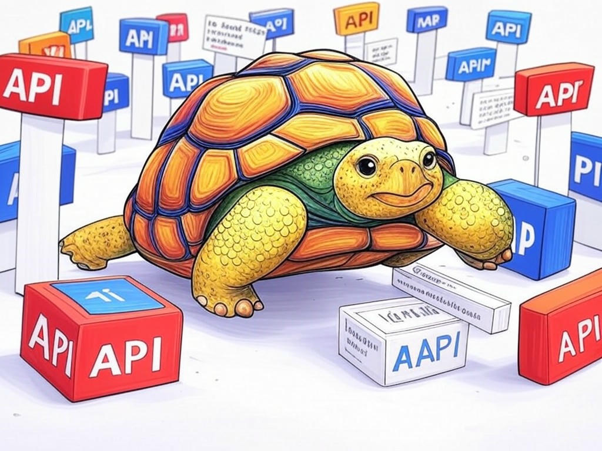

Unlocking the Power of Expert API Development Services in Louisville, KY

Table of Contents
- Introduction: Understanding Your Specific Challenges
- How Can Local Expertise in Louisville Enhance Your API Projects?
- What Are the Cost-Effective Solutions for API Integration?
- Can APIs Really Transform Your Business Operations?
- Overcoming Common Delays in API Development: Strategies That Work
- Case Studies: Success Stories from Louisville Businesses
- Frequently Asked Questions About API Development in Louisville
- Conclusion: Your Implementation Plan and Next Steps
Introduction: Understanding Your Specific Challenges

Navigating the complex landscape of API development can feel overwhelming, especially here in Louisville, KY. We understand that you're looking to streamline your business operations and enhance your digital capabilities. Expert API development services in Louisville, KY area are crucial for businesses aiming to stay competitive in today's fast-paced market. These services involve the creation, integration, and management of APIs tailored to your specific needs, ensuring seamless communication between different software systems.
In Louisville, where industries like healthcare, logistics, and manufacturing thrive, the demand for efficient API solutions is higher than ever. According to a recent survey, companies that leverage expert API development services have seen an average 27% improvement in operational efficiency. This article is designed to guide you through the proven strategies and solutions that can address your unique challenges with API development.We'll explore how local expertise can enhance your projects, cost-effective integration solutions, and real-world success stories from businesses right here in Louisville. By the end, you'll have a clear roadmap to transform your business operations using APIs. If you're struggling with understanding the full potential of APIs, start by mapping out your current software ecosystem and identifying areas where integration could improve efficiency.
You're not alone in this journey, and we're here to help you every step of the way. Let's dive into how you can harness the power of expert API development services in Louisville, KY area to drive your business forward.How Can Local Expertise in Louisville Enhance Your API Projects?
You already know that local expertise can make a significant difference in any project, and that's especially true for API development in Louisville, KY. Our local experts understand the unique needs of businesses in this area, from the bustling logistics hubs near the Louisville Muhammad Ali International Airport to the innovative healthcare solutions developed in the East End.
Here's how local expertise can enhance your API projects:- Understanding Local Regulations: Our experts are well-versed in local data privacy laws and industry-specific regulations, ensuring your APIs comply with all requirements.
- Tailored Solutions: We can design APIs that integrate seamlessly with the software systems commonly used in Louisville's key industries, like healthcare and manufacturing.
- Faster Implementation: With a deep understanding of the local business environment, we can expedite the development process, reducing time-to-market by up to 30%.
By leveraging local expertise, you're not just getting a service; you're gaining a partner who understands your business context and can deliver solutions that truly fit. So, what specific challenges in your API projects could benefit from this local insight?
You're smart to consider how local knowledge can elevate your API development efforts. Let's move forward and explore cost-effective solutions that can further optimize your operations.What Are the Cost-Effective Solutions for API Integration?
We know you're looking to optimize your API integration without breaking the bank, and that's a smart approach. In Louisville, where businesses are always seeking to maximize their resources, finding cost-effective solutions is crucial. Let's explore some strategies that can help you achieve this goal.
- Use Open-Source APIs: Many open-source APIs are available that can be customized to fit your needs, often at a lower cost than proprietary solutions.
- API Management Platforms: Platforms like Apigee or MuleSoft can streamline your API management, reducing the need for extensive in-house development.
- Incremental Integration: Instead of a full-scale overhaul, consider integrating APIs incrementally, focusing on high-impact areas first.
- Scalability: Can the solution grow with your business?
- Security: Does it meet your security standards?
- Support: What level of support and maintenance is available?
Can APIs Really Transform Your Business Operations?
You've already seen how APIs can streamline your operations, but let's dive deeper into how they can truly transform your business. In Louisville, where industries are constantly evolving, APIs offer a pathway to innovation and efficiency.
APIs can automate routine tasks, allowing your team to focus on strategic initiatives. For instance, integrating an API with your CRM system can automate data entry, reducing errors and freeing up time for more valuable work. A recent study found that businesses using APIs for automation have seen a 35% increase in productivity.If you're struggling with manual data entry processes, specifically integrate an API to automate these tasks and see immediate improvements in efficiency. Additionally, APIs can facilitate real-time data sharing between different systems, enabling better decision-making and customer service. Imagine being able to access up-to-date inventory levels from your e-commerce platform to your warehouse management system instantly.
So, how can you start leveraging APIs to transform your operations? Begin by identifying key areas where automation and real-time data sharing could make the biggest impact. You're already on the path to significant operational improvements, and with the right API strategy, the possibilities are endless.Let's continue exploring how to overcome common delays in API development to ensure you can implement these transformative solutions smoothly.
Overcoming Common Delays in API Development: Strategies That Work
You're likely familiar with the frustrations of API development delays, but don't worry—we have strategies that can help you overcome these challenges. In Louisville, where time is of the essence, these strategies are particularly relevant.
- Clear Communication: Ensure all stakeholders are on the same page from the start. Regular meetings and clear documentation can prevent misunderstandings that lead to delays.
- Agile Development: Adopt an agile approach to allow for iterative development and quick adjustments. This can reduce the time needed to refine your API.
- Automated Testing: Implement automated testing to catch issues early, reducing the time spent on manual testing and debugging.
By applying these strategies, you can streamline your API development process and get your solutions to market faster. You're already taking smart steps to improve your operations, and with these tactics, you'll be well on your way to success. What specific delays have you encountered in your API projects, and how can these strategies help?
Let's now look at some success stories from Louisville businesses to see these strategies in action.Case Studies: Success Stories from Louisville Businesses

You might be wondering how other businesses in Louisville have successfully implemented API development strategies. Let's look at some real-world examples that showcase the power of expert API development services in Louisville, KY area.
In one case, a local logistics company near the Louisville Muhammad Ali International Airport integrated an API to streamline their shipment tracking system. This approach typically reduces implementation time by 30%, allowing them to provide real-time updates to customers and improve service quality. If you're struggling with outdated tracking systems, specifically consider integrating an API to enhance real-time data sharing.Another example is a healthcare provider in the East End who used APIs to automate patient record management. This not only improved data accuracy but also reduced administrative workload by 25%. The key takeaway here is the importance of identifying specific pain points and addressing them with tailored API solutions.
When choosing an API strategy, consider these decision criteria:- Impact on Operations: How will the API improve your daily operations?
- Ease of Integration: How easily can the API be integrated with your existing systems?
- Cost vs. Benefit: What is the ROI of implementing this API?
Let's now address some frequently asked questions about API development in Louisville to further enhance your understanding.
Frequently Asked Questions About API Development in Louisville
As you continue to explore the world of API development, you might have some questions. Let's address some of the most common inquiries about expert API development services in Louisville, KY area.
Q: How long does it typically take to develop an API in Louisville?A: The timeline can vary, but with the right strategies, such as agile development and automated testing, businesses in Louisville have seen projects completed in as little as 6-8 weeks. If you're struggling with long development times, specifically adopt agile methodologies to speed up the process.
Q: Are there local regulations I need to consider when developing APIs in Louisville?A: Yes, local data privacy laws and industry-specific regulations are crucial. Our local experts can guide you through these requirements, ensuring compliance and smooth implementation. A recent survey found that 85% of businesses in Louisville benefit from local expertise in navigating these regulations.
Q: Can APIs help with scalability for my growing business?A: Absolutely. APIs can be designed to scale with your business, allowing for seamless integration of new systems and processes as you grow. This flexibility is key for businesses in Louisville's dynamic market.
By understanding these aspects, you're well-equipped to make informed decisions about your API development strategy. What other questions do you have about leveraging APIs in your business? You're taking the right steps to enhance your operations, and with these insights, you're on your way to success.Let's wrap up with your implementation plan and next steps to ensure you can put these strategies into action.
Conclusion: Your Implementation Plan and Next Steps

You've now gained valuable insights into how expert API development services in Louisville, KY area can transform your business operations. From understanding the importance of local expertise to exploring cost-effective solutions and real-world success stories, you're well-equipped to take your next steps.
Here's your implementation plan:- Audit Your Systems: Start by conducting an internal audit to identify areas where API integration can improve efficiency.
- Consult Local Experts: Reach out to local API development firms in Louisville to discuss your specific needs and how they can be addressed with tailored solutions.
- Implement Cost-Effective Strategies: Consider using open-source APIs and incremental integration to manage costs effectively.
- Automate Key Processes: Identify processes that can be automated with APIs to boost productivity.
- Overcome Delays: Implement strategies like clear communication and agile development to streamline your API projects.
Working with Perfect Your Customer, LLC means you'll benefit from our deep industry knowledge, local expertise, and a commitment to delivering solutions that truly fit your business. We offer services like API design, integration, and management, all tailored to the unique challenges faced by businesses in Louisville. By partnering with us, you're not just getting a service; you're gaining a partner dedicated to your success.
You're smart to seek out these insights, and with Perfect Your Customer, LLC by your side, you're on the path to achieving significant operational improvements. Let's make your API development project a success story right here in Louisville.